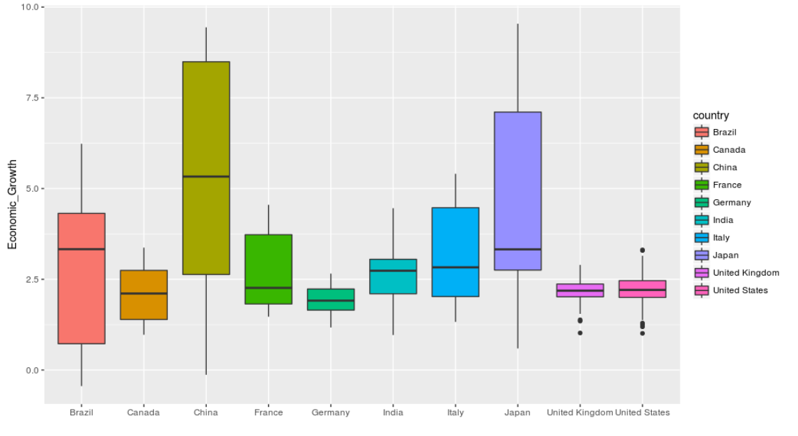
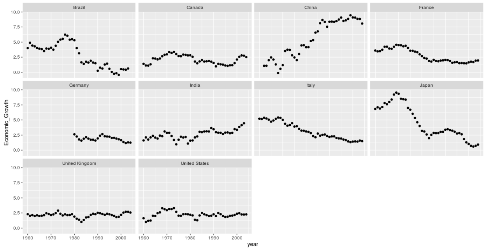
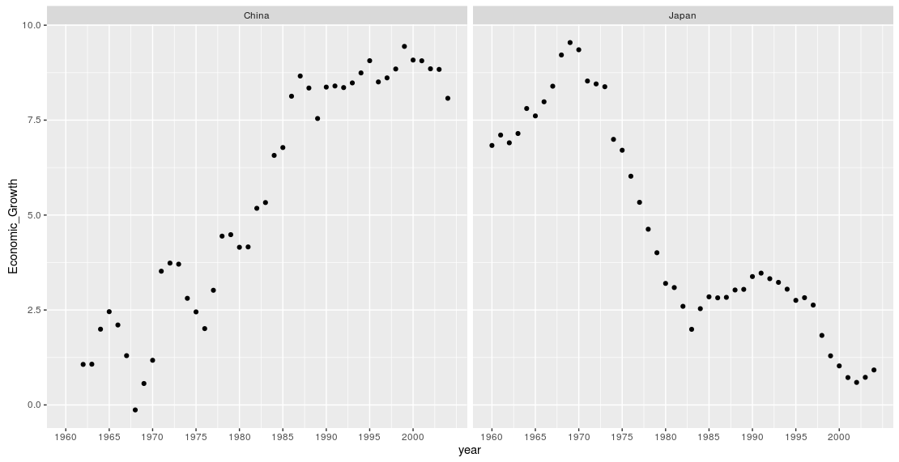
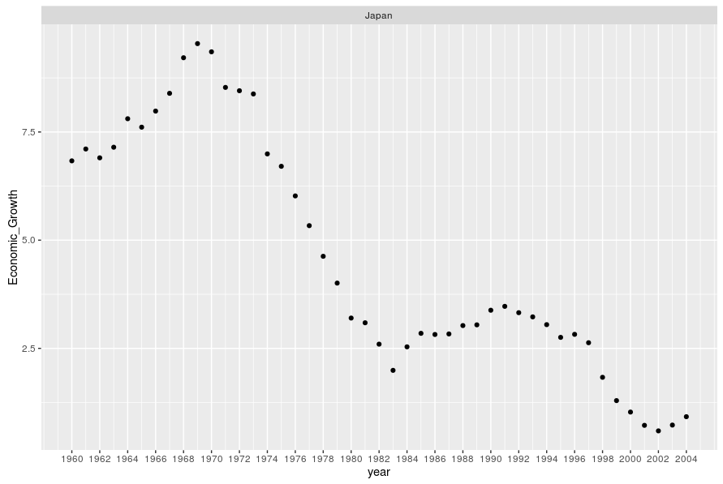

Exploring worlds top ten economies growth with R
I have been curious about data and its applications for a while now and recently I decided to take the plunge. After lot of searching and reading stuff online I found this fantastic free cousre by Facebook on Udacity to start my adventure with data. I am doing this post to remind my future self and anybody who wants to give exploratory data analysis a Go. Remember I am still a beginner and if you have any suggestions or improvements, you are Welcome :).
So after having gone through first 3 chapters of the course, Udacity gives an exercise where we have to pick any data of our choice from Gapminder website and apply our skills that we have learnt so far. As I have some interest in economics and markets, I went with "Economic growth over the past 10 years" dataset.
Now first thing I needed to do was to get myself familiar with data and its structure. For that we will be using R to explore, understand and transform data. For those who are not familiar with R, It is an open source simple programming language to manipulate data with tons of library available for free. It has simple syntax so it should be readable even if you are not familiar with this language.
We will use two R packages, ggplot2 for creating graphs, reshape for data manipulation and RStudio for development.
So let's get started:
First thing we need is to get the data needed for our exploration. Go to Gapminder's website and search for "Economic growth over the past 10 years" then download the excel file. The file is in excel format we need to convert it into csv for manipulation. This is a personal choice. You can go with excel itself and there are some really awesome libraries available that can do the job for you. I personally prefered csv as a format to work with. Second is conversion from excel to csv, There are so many ways of doing it but for simplicity we will go with Google Docs. Just upload the file into docs and then download it as csv.
So we got our csv file now it's time to import it and have some fun with R.
Here we wrote five statements which are pretty self explanatory. First two statements install both the packages we need, next two loads the packages in memory for us. Every time you start RStudio you have to reload all your dependencies even if they are already installed. Last statement import our converted csv file into memory for R to work with.
After getting data into R it was time to analyze it and form some basic understanding of it. I had following observations:
- Provided data has observations for 188 countries over period 1960-2004
- There were lots of small countries which were having missing data values throughout as late as 1990
- The data is in "Wide" format as there were 188 observation for 46 variables. One variable each for a year
- We need to apply proper naming and transformation on column names
Asking Questions?
On initial observation and exploration it was time to think about what questions we can ask and get answered by available data? I thought We can address these ones:
- Which country has most consistent growth pattern?
- Is there any country which was lagging behind initially and then saw rapid rise or vice-versa and Why?
- Is there any outlier leader or leggard in growth?
- Is there any correlation between the growth of two specific countries?
- Any particular year or event which changed the economic growth trajectory of any country for decades?
- Shall We consider those countries which has lots of missing values?
- Shall We consider only top ten countries by GDP?
After forming basic questionnaire, We have to transform raw data so we can compute and visualize it. Above listed questions were not form in ny specific order, I just wrote them as they occur to me.
On going through all the questions I thought we should go for answering last two questions first. As they will change the data that we will be working with.
Shall We consider those countries which has lots of missing values?
I thought significant missing values would affect data quality and later our model if we build one which ultimately affect prediction. I also thought of any other filling method such as replacing missing values and other solutions but decided not to include countries which has lots of missing values. Another factor was answer of our next question.
Shall We consider only top ten countries by GDP?
As world's top ten country by GDP contributed almost 68% to global GDP. I thought it would be better to just focus on top ten economies only as it would cut the noise and will correctly reflect the status of whole world.
Data Cleansing & Transformations
Since we will focus only on top ten countries, we will need to transform our data to reflect that. But before that there are some issue with the data quality here such as names of the column, format ofthe data etc. That we need to address before plotting our data to get answers.
Here we have subset the data only for top ten countries of the world by GDP.
As you will observe data is in wide format i.e. there are one column each for every single year since 1960 till 2004. It would have been easy for us if we can have per year data for each country in row to help us visualize. For that we have used melt function of Reshape library which does it for us in single line of code. Next you will observe that all years have X appended with them such as 1960 is names as X1960. We need to remove this extra character as it will help R to perform any manipulations on date we want. Also readability will be improved when we look at the data. Next two lines of code do this for us.
Here we update the names of column variables in data set and drop any duplicate values if there is any.
Finally we have our data ready to plot and discover insight from it. I choose box plot for charting as it will convey use distribution and variability of data in one single graph
Here is the plot generated by ggplot for us. We can save any graph we create using library function ggsave().
 Then we can further investigate GDP growth by countries using following command.
So we are done with data wrangling and visualization part. Now let's see if this perspective that we have got about our data can help us some of the questions that we had initially.
Which country has most consistent growth pattern?
As you can from the boxplot, United Kingdom's growth has shortest candle length. By further investigating data it gets confirmed that its growth fluctuated between 1%-2.8% annually over period of time which is least of all countries.
Is there any country which was lagging behind initially and then saw rapid rise or vice-versa and Why?
To answer this question we need to investigate economies individually.
Here is the output of our plot
We can easily infer China as one which saw rapid rise after a slow start. Where as Japan is one the which started great, gained some momentum and then flattered in the end.
Is there any outlier leader or leggard in growth?
Clearly China was world leader in growth during 1960-2004 period.
Is there any correlation between the growth of two specific countries?
There seems to be some correlation between Japan and China but it is still our intuition. Lets confirm this with data.
Above code confirms growth trajectory over time for both the countries side by side. Below is generated graph.
As you can observe there is negative correlation between two countries. As China started to grow around late 60's and 70's at same time Japan started its never ending slide in growth.
Any particular year or event which changed the economic growth trajectory of any country for decades?
We can easily observe from first graph that Brazil, China, France, India, Italy and Japan are countrie which has had that one impact year that changes their economic growth trajectory for decades or forever in some cases. Curious mind can also find out what were the event which triggered these changes but we will stay away from it for now. Following the code that we will se to find out exact year for these countries. e.g. Japan

For Japan, 1969 was inflection point in terms of growth. It was growing about 8% in that year but after that it fell off and never got back to those growth rates in its entire history.
For others it follows as
- Brazil: 1976
- China: 1968
- France: 1969
- India: 1974
- Italy: 1968
As you can see 1967-1977 was the decade when all major world economy saw their fortunes changed upside down from being world leader to growth leggard.
So we have been able to answer all our curiosity and questions from data and that's awesome because its unbiased and accurate. I know this article got little long and hope it was worth your time. Thanks for reading and keep crunching data, YAY!!